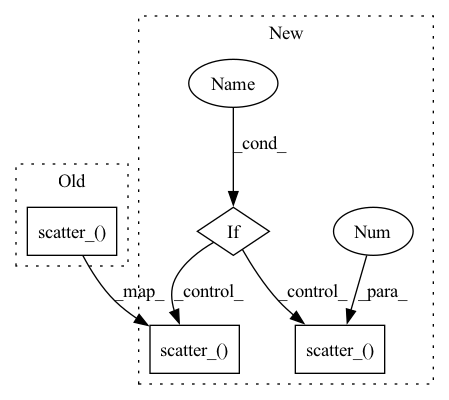

Pattern ID :11443

Before Change
index = torch.where(label != -1)[0]
m_hot = torch.zeros(index.size()[0], cos_theta.size()[1], device=cos_theta.device)
margin = torch.normal(mean=self.m, std=self.std, size=label[index, None].size(), device=cos_theta.device) // Fast converge .clamp(self.m-self.std, self.m+self.std)
m_hot.scatter_(1, label[index, None], margin)
cos_theta[index] -= m_hot
ret = cos_theta * self.s
return ret
After Change
index = torch.where(label != -1)[0]
m_hot = torch.zeros(index.size()[0], cos_theta.size()[1], device=cos_theta.device)
margin = torch.normal(mean=self.m, std=self.std, size=label[index, None].size(), device=cos_theta.device) // Fast converge .clamp(self.m-self.std, self.m+self.std)
if self.plus:
with torch.no_grad():
distmat = cos_theta[index, label.view(-1)].detach().clone()
_, idicate_cosie = torch.sort(distmat, dim=0, descending=True)
margin, _ = torch.sort(margin, dim=0)
m_hot.scatter_(1, label[index, None], margin[idicate_cosie])
else:
m_hot.scatter_(1, label[index, None], margin)
cos_theta[index] -= m_hot
ret = cos_theta * self.s
return ret
In pattern: SUPERPATTERN
Frequency: 3
Non-data size: 4
Instances
Fragment ID: 39045079
Project Name: fdbtrs/elasticface
Commit Name: ea2c5af079d5a6062fd7b1d714befc5b26113c6a
Time: 2021-11-23
Author: fdbtrs@hotmail.com
File Name: utils/losses.py
M Class Name: ElasticCosFace
N Class Name: ElasticCosFace
M Method Name: forward(3)
N Method Name: forward(3)
M Parent Class: nn.Module
N Parent Class: nn.Module
M File Name: utils/losses.py
N File Name: utils/losses.py
M Start Line: 69
M End Line: 69
N Start Line: 74
N End Line: 86
'>
Before Change
index = torch.where(label != -1)[0]
m_hot = torch.zeros(index.size()[0], cos_theta.size()[1], device=cos_theta.device)
margin = torch.normal(mean=self.m, std=self.std, size=label[index, None].size(), device=cos_theta.device) // Fast converge .clamp(self.m-self.std, self.m+self.std)
m_hot.scatter_(1, label[index, None], margin)
cos_theta.acos_()
cos_theta[index] += m_hot
cos_theta.cos_().mul_(self.s)
After Change
index = torch.where(label != -1)[0]
m_hot = torch.zeros(index.size()[0], cos_theta.size()[1], device=cos_theta.device)
margin = torch.normal(mean=self.m, std=self.std, size=label[index, None].size(), device=cos_theta.device) // Fast converge .clamp(self.m-self.std, self.m+self.std)
if self.plus:
with torch.no_grad():
distmat = cos_theta[index, label.view(-1)].detach().clone()
_, idicate_cosie = torch.sort(distmat, dim=0, descending=True)
margin, _ = torch.sort(margin, dim=0)
m_hot.scatter_(1, label[index, None], margin[idicate_cosie])
else:
m_hot.scatter_(1, label[index, None], margin)
cos_theta.acos_()
cos_theta[index] += m_hot
cos_theta.cos_().mul_(self.s)
'>
Fragment ID: 39045078
Project Name: fdbtrs/elasticface
Commit Name: ea2c5af079d5a6062fd7b1d714befc5b26113c6a
Time: 2021-11-23
Author: fdbtrs@hotmail.com
File Name: utils/losses.py
M Class Name: ElasticArcFace
N Class Name: ElasticArcFace
M Method Name: forward(3)
N Method Name: forward(3)
M Parent Class: nn.Module
N Parent Class: nn.Module
M File Name: utils/losses.py
N File Name: utils/losses.py
M Start Line: 43
M End Line: 43
N Start Line: 40
N End Line: 52
'>
Before Change
scores = F.softmax(self.out, dim=1)
one_hot_label = torch.zeros(len(y), self.target_classes).to(self.device)
one_hot_label.scatter_(1, y.view(-1, 1), 1)
l0_grads = scores - one_hot_label
l0_expand = torch.repeat_interleave(l0_grads, embDim, dim=1)
l1_grads = l0_expand * self.emb.repeat(1, self.target_classes)
After Change
self.target_classes:((j + 1) * embDim) + self.target_classes].view(-1, 1)) + grads_currX[0][j])).view(-1)
scores = F.softmax(self.out, dim=1)
if self.valid:
Y_Val = torch.tensor(self.Y_Val)
one_hot_label = torch.zeros(Y_Val.shape[0], self.target_classes).to(self.device)
one_hot_label.scatter_(1,Y_Val.view(-1, 1), 1)
else:
predicted_y = self.predict(self.unlabeled_x)
one_hot_label = torch.zeros(self.unlabeled_x.shape[0], self.target_classes).to(self.device)
one_hot_label.scatter_(1, predicted_y.view(-1, 1), 1)
l0_grads = scores - one_hot_label
l0_expand = torch.repeat_interleave(l0_grads, embDim, dim=1)
l1_grads = l0_expand * self.emb.repeat(1, self.target_classes)
'>
Fragment ID: 39045081
Project Name: decile-team/distil
Commit Name: 7698979379fa0adb2d9f9439c8105cf98737f9ac
Time: 2021-01-03
Author: you@example.com
File Name: active_learning_strategies/glister.py
M Class Name: GLISTER
N Class Name: GLISTER
M Method Name: _update_grads_val(3)
N Method Name: _update_grads_val(3)
M Parent Class: Strategy
N Parent Class: Strategy
M File Name: active_learning_strategies/glister.py
N File Name: active_learning_strategies/glister.py
M Start Line: 98
M End Line: 137
N Start Line: 94
N End Line: 144